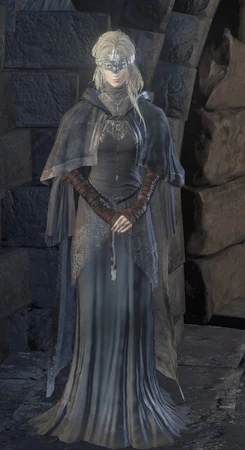

← Volver
← Volver
La Guardiana de Fuego no es un jefe ni un personaje hostil. Sin embargo, su importancia en la historia y en el progreso del jugador la hacen merecedora de un lugar en esta lista. La Guardiana de Fuego es el NPC más importante de Dark Souls III, ubicada en el Santuario del Enlace de Fuego. Ella vigila la hoguera y asiste al jugador en su largo y arduo viaje a través de Lothric. Interactuar con ella permite al jugador subir de nivel y, más adelante, curar el Sigilo Oscuro usando el Alma de la Guardiana de Fuego. Ella es una damisela ciega con una corona blanca que cubre sus ojos y viste una toga negra. Como las demás Guardianas de Fuego, puede transformar Almas en poder. El jugador también puede hablar con ella y notará cambios en su diálogo mientras más progrese en el juego.
¿Dónde se puede encontrar a la Guardiana de Fuego en Dark Souls III? En el Santuario del Enlace de la Llama, cerca de la hoguera cuando llegamos la primera vez. Luego, la encontraremos cerca del pasillo o sentada en las escaleras.
El único drop posible son los Ojos de la Guardiana de Fuego, si estos fueron entregados a ella previamente.
Diálogo del primer encuentro
"Welcome to the bonfire, Unkindled One. I am a Fire Keeper. I tend to the flame, and tend to thee. The Lords have left their thrones, and must be deliver'd to them. To this end, I am at thy side."
"Produce the coiled sword at the bonfire. The mark of ash will guide thee to the land of the Lords. To Lothric, where the homes of the Lords converge."
"Understood. Then touch the darkness inside me. With your power, let us make the 'soul without a master.' Farewell, ashen one."
Al encontrarse en la pantalla de incremento de nivel
"Let these souls, withdrawn from their vessels, Manifestations of disparity Elucidated by fire, Burrow deep within me, Retreating to a darkness beyond the reach of flame, Let them assume a new master, Inhabiting ash, casting themselves upon new forms."
Al seleccionar "hablar" en general
"Ashen one, to be Unkindled is to be a vessel for souls. Sovereignless souls will become thy strength. I will show thee how. Ashen one, bring me souls, plucked from their vessels..."
Al entregarle el Alma de la Guardiana de Fuego
"…Ashen one, this is.. …much like what lies within me… Then let it find its own place, within my bosom. She will understand. We are both Fire Keepers, after all."
Al seleccionar "hablar" luego de visitar el Castillo de Lothric
"Ashen one, may I pose thee a question? Has the little Lord Ludleth spoken to thee of any... curious matters? I sense that he possesseth some knowledge... Of a thing once most precious, or most terrible, now lost to the Fire Keepers. Pray tell, is it a matter of which I should be apprised?"
Al reaparecer post muerte
"I'm truly sorry but know'st thou not? I cannot die. So please, ashen one, allow me to serve thee. The Lords have left their thrones, and must be delivered to them. To this end, I am ever at thy side."
Al entregarle los Ojos de Guardiana de Fuego
"...Ashen one, are these... Are these eyes? How gracious of thee, ashen one. The very things we Fire Keepers have been missing."
"Ashen one, my thanks for the eyes thou'st given. But Fire Keepers are not meant to have eyes. It is forbidden. These will reveal, through a sliver of light, frightful images of betrayal. A world without fire. Ashen one, is this truly thy wish?"
Al seleccionar "rechazar"
"Of course not. Please, kill me, and take these eyes away. Before I am drawn into the darkness. seduced by the thin light, and the awful betrayal."
Al seleccionar "Desear un mundo sin la Llama"
"Of course. I serve thee, and will do as thou bid'st. This will be our private affair. No one else may know of this. Stay thy path, find lords to link the fire, and I will blindly tend to the flame. Until the day of thy grand betrayal."
"Ashen one, forgive me if this soundeth strange. The eyes show a world without fire, a vast stretch of darkness. But 'tis different to what is seen when stripped of vision. In the far distance, I sense the presence of tiny flames. Like precious embers, left to us by past Lords, linkers of the fire. Could this be what draws me to this strangely enticing darkness?"
Una vez los Ojos de Guardiana de Fuego fueron entregados
"...Ashen one, if thine heart should bend... kill me, and strip these eyes from my person. I will return as the Fire Keeper I once was. As it is has always been."
Luego de colocar todas las Cenizas de los Señores
"The five lords sit their five thrones. All thanks to thee, most worthy of lords. Ashen one, with the Lords as thy witness, bend thy knee afore the bonfire's coiled sword. And let the Lords' embers acknowledge thee as their true heir. A true lord, fit to link the fire."
Al arrodillarse frente a la hoguera (iniciar endgame)
"Noble Lords of Cinder. The fire fades... ...and the lords go without thrones. Surrender your fires... ...to the true heir. Let him grant death... To the old gods of Lordran, deliverers of the First Flame."
Hablar (luego de arrodillarse frente a la hoguera)
"Ashen one, link the fire. For the Lords of Cinder, for the ashen prisoners, for all those held to preserve the fire. Link the First Flame."
Hablar (luego de arrodillarse frente a la hoguera y haber entregado los Ojos)
"Ashen one, if, when thou peerest upon the First Flame... ...Thou wishest yet, for a world without fire, for an end to the linking of the fire... Then call upon me. I am a Fire Keeper, and I tend to the flame, to the very end. Thou'st given me eyes, and such it was they shewed me."
El final "El Final del Fuego"
"The First Flame quickly fades. Darkness will shortly settle. But one day, tiny flames will dance across the darkness. Like embers, linked by lords past. Ashen One, hearest thou my voice, still?"

 ↑
↑